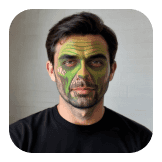
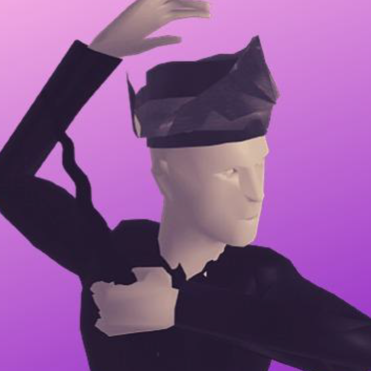
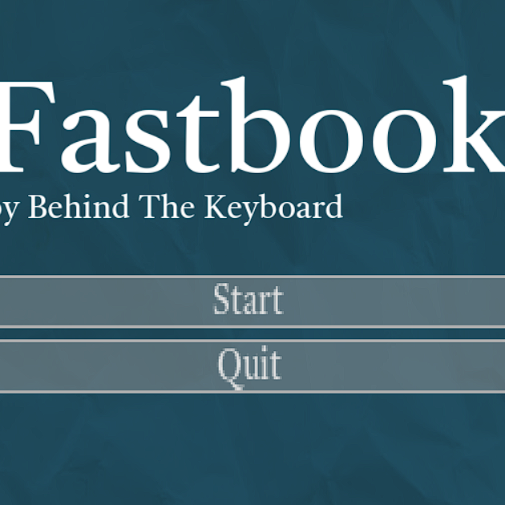

Work Produced/Created
Sarah's Little Adventure
2D Platformer mobile game developed using GDevelop
Oct 2023 - Oct 2023

Sea Monster AR Filter
Stylized filter on Tiktok for party and self-expression
November 2023 - November 2023
Ejen Ali: Agents' Arena Wiki
Fandom Page for video game Ejen Ali: Agents' Arena for community
Jul 2022 - Dec 2022

Legasi
3D Action video game, a gamification of Malay-cultured Penchak Silat and Empu’s Blacksmithing
Mar 2022 - Jun 2022

Fastbook
A Socially Conscious Game In Identifying Scam Product on Social Media
May 2022 - May 2022